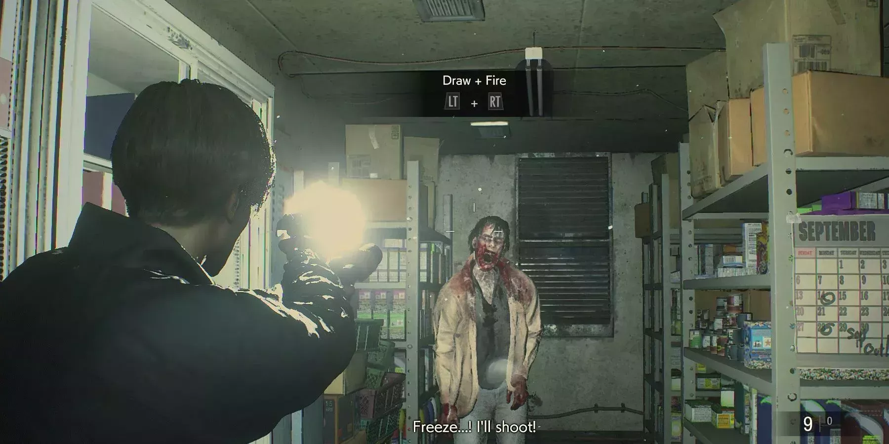
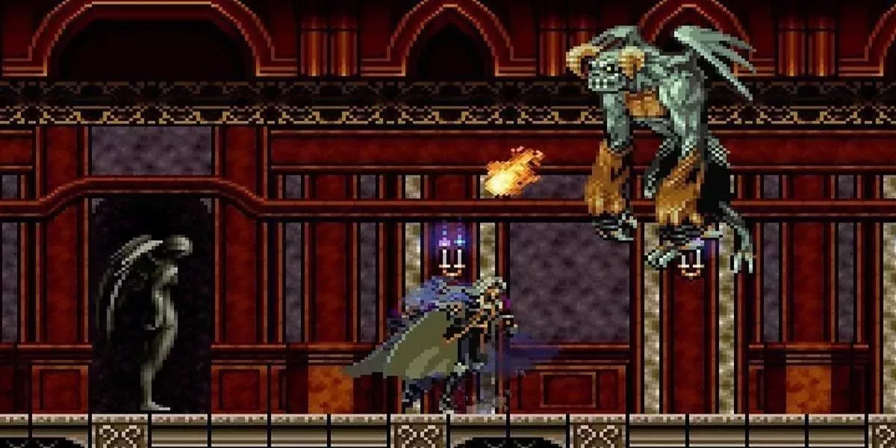
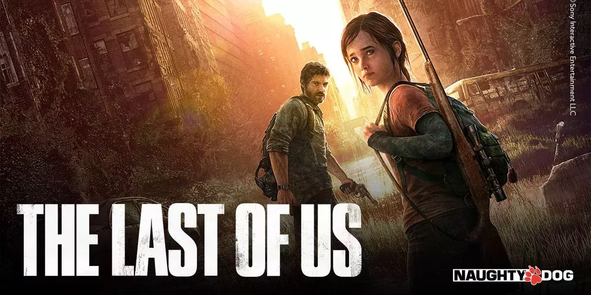
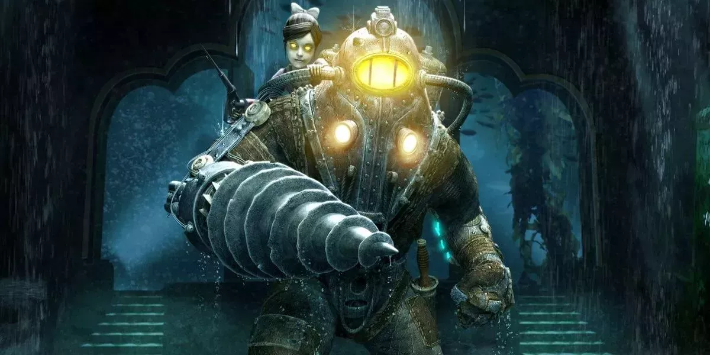
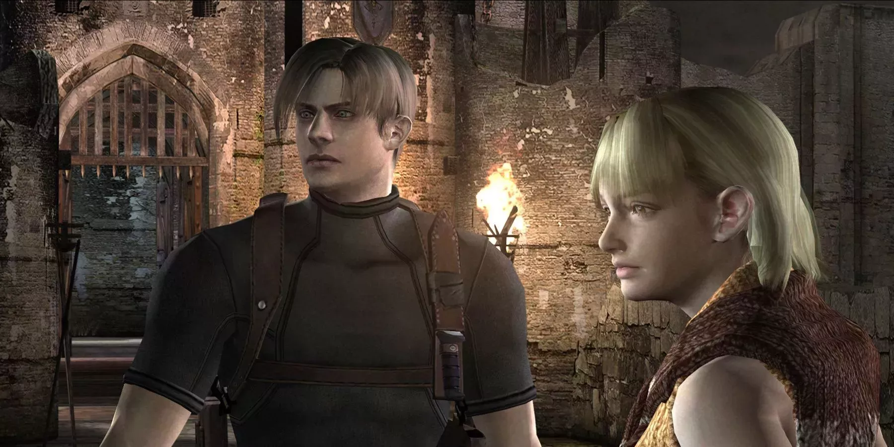

Estamos muy cerca de Halloween o como es llamado en países hispanos, noche de brujas. Es por eso que es un muy buen momento para rememorar videojuegos que han marcado el género de terror. Nos basaremos en las calificaciones otorgadas en la página metacritic para evitar caer en favoritismos personales. Para ver estas puntuaciones puedes visitar el sitio de Metacritic y buscar las puntuaciones.
|
Resident Evil 2, la segunda entrega de la que posiblemente sea la mejor franquicia de videojuegos de terror de todos los tiempos, es un ejemplo de survival horror. Presenta mejoras generales respecto a su predecesor en casi todos los aspectos, con un claro enfoque en la exploración, los puzles y el combate. Cuenta con personajes para dos jugadores, con caminos ramificados y argumentos únicos para cada uno. Quizá el mayor logro de este juego sea el de consolidar a Resident Evil no como un éxito puntual, sino como una franquicia continua que seguiría siendo de gran calidad durante décadas. |
 |
|  |
Con dos entradas entre los diez mejores juegos de terror de todos los tiempos, la franquicia Castlevania se ha ganado a pulso su lugar en el salón de la fama de los videojuegos. En Symphony of the Evening, el jugador encarna al hijo del famoso vampiro Drácula mientras busca a su antiguo compañero Richter Belmont en el recién reaparecido castillo del Conde Drácula. Presenta la clásica acción de desplazamiento lateral en 2D, con una combinación de objetos y armas, así como poderes vampíricos que se descubren y desbloquean, permitiendo el acceso a nuevas áreas del juego. |
|
Los zombis hacen otra aparición en los mejores juegos de terror de todos los tiempos, esta vez en el juego de terror de aventura/supervivencia de Naughty Canine. The Final of Us se desarrolla en un mundo postapocalíptico asediado por una plaga de hongos que convierte a personas y animales en monstruos caníbales. El jugador debe atravesar este paisaje infernal para escoltar a la joven Ellie hasta un refugio. The Final of Us es bien conocido por su narrativa, y esto continuó en su secuela de 2020. Con una gran trama y una jugabilidad atractiva, no es de extrañar que este juego ocupe un lugar tan alto para tanta gente. |
 |
|  |
Bioshock, que dio origen a una serie de juegos muy apreciados, hace que el jugador se adentre en una utopía hundida y fallida, llena de experimentos genéticos que han salido mal. La atmósfera submarina hace que este juego sea suficientemente aterrador, pero los enemigos, como los enormes Massive Daddies vestidos con escafandra y las inquietantes Little Sisters, son la guinda del pastel. La serie Bioshock es conocida por su calidad, y este es el juego que lo inició todo. Se mantiene bien y tuvo un remaster para mantenerlo al día en el departamento visible. |
|
La joya de la corona de una franquicia ya prestigiosa, Resident Evil 4 es todo lo que un juego de terror puede ser. Sigue a uno de los protagonistas del segundo juego, Leon S. Kennedy, enviado a rescatar a la hija del presidente de un secuestro. Hace un mayor hincapié en los tiroteos que las entradas anteriores de la serie, y el juego de armas es excepcional para su época. Con una serie de extrañas criaturas mutantes a las que enfrentarse, junto con hordas de aldeanos con aspecto de zombis, no es de extrañar que este juego sea el mejor juego de terror de todos los tiempos. |
 |